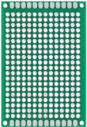
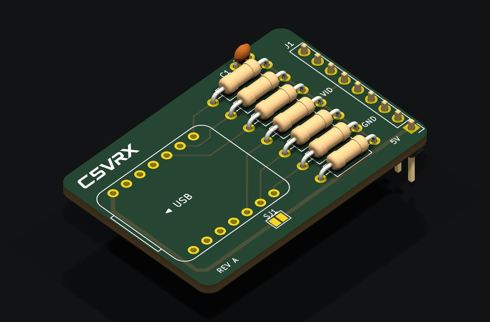
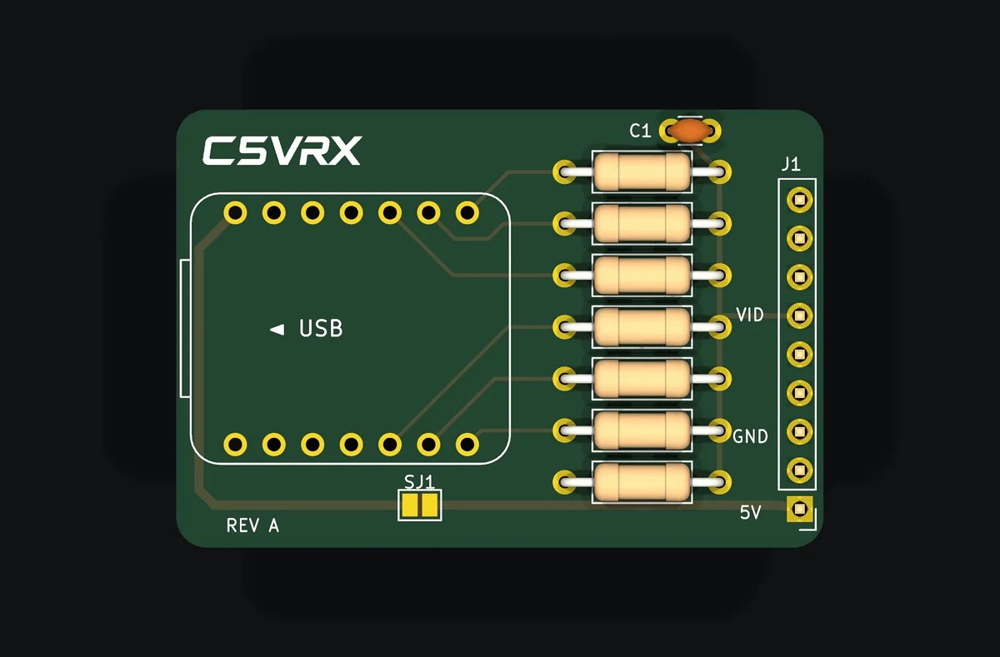
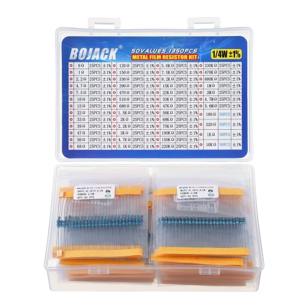

Perfboard
Buy on AmazonBuild your own 5.8 GHz analog FPV receiver with an ESP32-C5. Six resistors connected to its GPIO pins make the AV video output. Build it on perfboard, flash the firmware over USB and connect your goggles or monitor.
Video or sync can disappear without warning. Loss of FPV video can lead to a crash, property damage or serious injury. Do not rely on C5VRX as your only means of maintaining safe aircraft control.
No warranty: the firmware is provided under GPL-3.0-only, including its warranty and liability provisions in sections 15–17, to the extent permitted by applicable law. This warning does not replace those terms or limit rights that cannot legally be excluded.
See the README and the evidence documented for your exact build.
Drag & drop a firmware binary (.bin) here
or0x0 for a merged image, 0x10000 for an application binary.
No device connected
Use a USB data cable to connect your XIAO ESP32-C5 and choose its serial port when connecting.
A running C5VRX-5 receiver enters download mode by itself. If connecting still fails, hold BOOT, tap RESET, then release BOOT.
Close the Terminal (or any other serial program) first: only one program can use the port.
Connect a C5VRX-5 receiver over USB to use its menu.
Test on the ground. U80P64-R1 uses one fixed demodulator table; live VTX matching changes the analog filter, not kp or LP. Live OUTPUT, format and profile changes share a five-second firmware cooldown.
The receiver records every session by itself: picture quality, verified output identity, native sync coverage, gain, DC, temperature, events and raw IQ at the worst moments (about 4 hours, oldest overwritten first). Read it after a flight; the receiver keeps running while it is read.
| Session | Length | Picture | SNR median / worst | Signal median / weakest with picture | Verified demod / level | Native H lock / observer coverage | Repairs / longest H unlock | Dropouts | Worst DC | Max temp | Deviation | Track / edge / recover | Main impairment | Reset | Firmware |
|---|
picture SNR (dB) gain index / 4 DC (cells x 5) temperature (°C / 4) signal at the chip ((dBm + 100) / 2) native H lock (% / 4) dropout
Connect a receiver to view serial output.
Keys are case-sensitive and send one byte without Enter; h lists them. The log keeps the latest 120,000 characters.
Connecting the terminal releases the flasher and the other way round; they never share the port. The menu updates by itself while the receiver is connected.
C5VRX turns an ESP32-C5 into a 5.8 GHz analog FPV video receiver. It is an open-source project by Twotoz and the C5VRX contributors.
The basic idea is simple: solder one resistor to each of six GPIO pins, then join the other ends together. That connection is your AV video output for analog goggles or a monitor. Follow the wiring guide below and ground-test your setup.
Perfboard is the easiest way to build it for now, until a C5VRX DIY kit is available. Start with a Seeed Studio XIAO ESP32-C5 and the six GPIO resistors. Add a 200 Ω resistor from the joined output to GND, and connect your goggles’ or monitor’s video input and ground. The wiring guide shows exactly which pins and resistor values to use. Then install the firmware with the USB web flasher.
The C5VRX GitHub repository includes GPL-3.0-only firmware, schematics, host tests and documented experiments. Read the receiver findings for the evidence and limits of each change, or join the project’s Discord from the link above to share builds and test results.
A DIY receiver board in a Fat Shark-style module form factor, designed to make your C5VRX build easier. These 3D previews show the upcoming kit design. Not available to buy yet. For now, perfboard is the easiest way to build your receiver.



Perfboard
Buy on Amazon
Resistor kit
Buy on AmazonAffiliate links. As an Amazon Associate, I earn from qualifying purchases. All affiliate earnings go back into C5VRX development.
A Seeed Studio XIAO ESP32-C5, six resistors for the GPIO pins, one 200 Ω resistor to GND, an antenna and a connection to your goggles’ or monitor’s AV input. Perfboard makes assembly easier while we wait for a C5VRX DIY kit. Follow the wiring guide for the pins, resistor values and connections.
C5VRX is designed for 5.8 GHz analog FM FPV video and composite PAL/NTSC output. Check the documented camera, goggles and monitor tests for your exact firmware build; compatibility is experimental.
Yes. Connect the receiver with a USB data cable and use a desktop browser with Web Serial, such as Chrome or Edge. The web flasher offers published firmware builds and local binary files. The flashing guide also documents the command-line workflow.
C5VRX is experimental. Passing tests or installing a versioned release does not establish flight safety or guarantee range. Read the safety and warranty disclaimer, complete calibration and ground-test every firmware and hardware/settings combination.